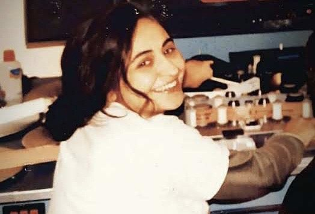
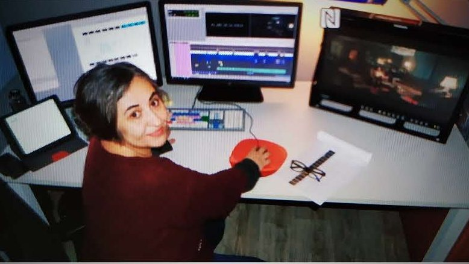
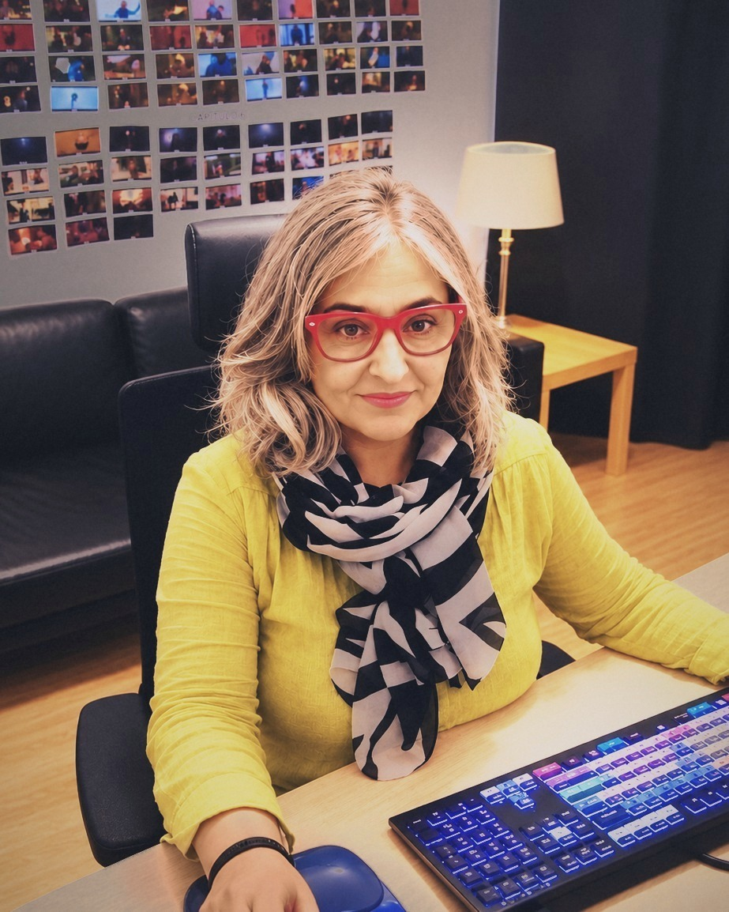
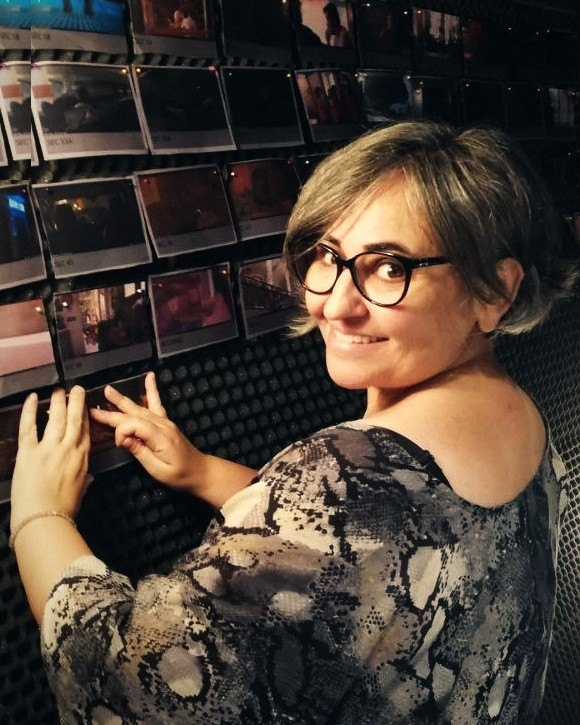

Marta Salas
Montadora de cine y televisión
Más de 25 años en la sala de montaje, de la primera lectura del guion al máster final.
«Apasionada por crear historias que conecten y emocionen a través del montaje.»
Work in progress
Sobre mí


En la sala de montaje
Acompaño cada proyecto desde la primera lectura del guion hasta el máster final, mano a mano con Director/a y con todos los departamentos de postproducción.
En más de 25 años de carrera he montado largometrajes, series, documentales y cortometrajes para productoras y plataformas nacionales e internacionales, como Sony, Warner, Filmax, Netflix, Amazon, RTVE, Atresmedia o Mediaset.
He sido nominada al mejor montaje en los Premis Berlanga por El lodo y he montado AVA, Goya 2024 al mejor cortometraje documental.
Me formé en Montaje en la ECAM, tras estudiar Imagen y Sonido.
Miembro de AMMAC y de la AACCE.
Trabajo desde mi propio estudio de montaje con Avid, de forma autónoma y en remoto, y compagino el montaje con la docencia en la ECAM.

Bobina 1 · Filmografía
Trabajos en pantalla
Cine y televisión, de las plataformas a la gran pantalla.
Pulsa un cartel para ver los detalles.
La lista completa de créditos está en Trayectoria.
Bobina 2 · Visionado
Reel de montaje
Tráileres de películas y series que he montado.
Bobina 3 · Filmografía
Trayectoria completa
110 créditos en cine y TV.
No hay resultados para esa búsqueda.
Bobina 4 · Docencia
Docencia
Profesora de montaje en la ECAM
«La pasión es una virtud en la comunicación.
Soy comunicadora y te puedo emocionar.»

Bobina 5 · Formación
Formación continua
Diplomada en Montaje por la ECAM.
Picture lock